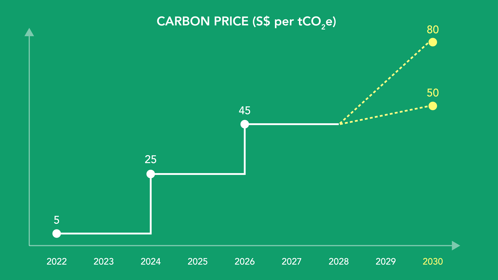

Team 17 Project Proposal
Motivation
In general, we have Several commercial software packages in market to draw data and their summaries. However,ideally, such tools should be open source, freely available and allow contributions or modifications by users. Inspired by Prof Kam, with the acquired coding skills and understanding of data ,this group project aims to create such flexible website by making use of interactive visualizations to answer questions from Visual Analytics Project to find out the Impact Of Climate Change In Singapore.
Problem Statements
Following are the questions we aim to answer, referencing from Singapore climate targets:
Challenge 2: Singapore’s Long-Term Low Emissions Development follows Addendum to the LEDS captures Singapore’s raised national climate target to achieve net zero emissions by 2050. It builds on the LEDS submitted in 2020, which laid out a target of halving our emissions from their peak to 33 MtCO2e by 2050.
Consider the Singapore is accelerating the low-carbon transition for industry, economy and society through four key thrusts, and use visual analytic techniques to address these questions.
Catalysing business transformation, e.g. improving energy efficiency, shifting towards a more sustainable Energy and Chemicals sector. Describe your rationale for your answers. Limit your response to 10 images and 500 words.
Investing in low-carbon technologies, e.g. carbon capture, utilisation and storage (CCUS), and use of low-carbon fuels. Describe your rationale for your answers. Limit your response to 10 images and 500 words.
Pursuing effective international cooperation, e.g. international climate action, regional power grids, market-based mechanisms. Limit your response to 10 images and 500 words.
Adopting low-carbon practices, e.g. greener commutes with cleaner vehicles and Walk-Cycle-Ride.
Approach
Question 1
POWER
Power generation is one of the major sources of Singapore’s carbon emissions and accounts for about 40% of our emissions today. With our limited capacity to tap on alternative energy sources, we currently rely heavily on imported natural gas to power our nation.
They will be evaluated based on:
- Natural Gas;
Since 2000, Singapore has shifted away from less efficient fossil fuels and in turn increased the percentage of natural gas used in electricity generation from 19% to more than 95% today.

Question 2
HOUSEHOLDS
Singapore has taken steps to reduce energy consumption of the household sector, which accounts for about 15% of our total electricity consumption. The Minimum Energy Performance Standards which have been progressively tightened over the years, improves the energy efficiency of household appliances such as refrigerators, air-conditioners, clothes dryers and lamps.
They will be evaluated based on:
- energy-saving habits
Households can also reduce their energy consumption use by practising simple energy-saving habits.
Question 3
CARBON TAX
Singapore’s carbon tax underpins our net zero targets and climate mitigation efforts by providing an effective economic signal to steer producers and consumers away from carbon-intensive goods and services, hold businesses accountable for their emissions, and enhance the business case for the development of low-carbon solutions. In all, the carbon tax currently covers 80% of our total greenhouse gas (GHG) emissions from about 50 facilities in the manufacturing, power, waste, and water sectors. The carbon tax forms part of Singapore’s comprehensive suite of mitigation measures to support the transition to a low-carbon economy.
They will be evaluated based on:
- Carbon Tax in Singapore from 2019 to 2023
Singapore implemented a carbon tax, the first carbon pricing scheme in Southeast Asia, on 1 January 2019. The carbon tax level was set at S$5/tCO2e for the first five years from 2019 to 2023 to provide a transitional period for emitters to adjust.
